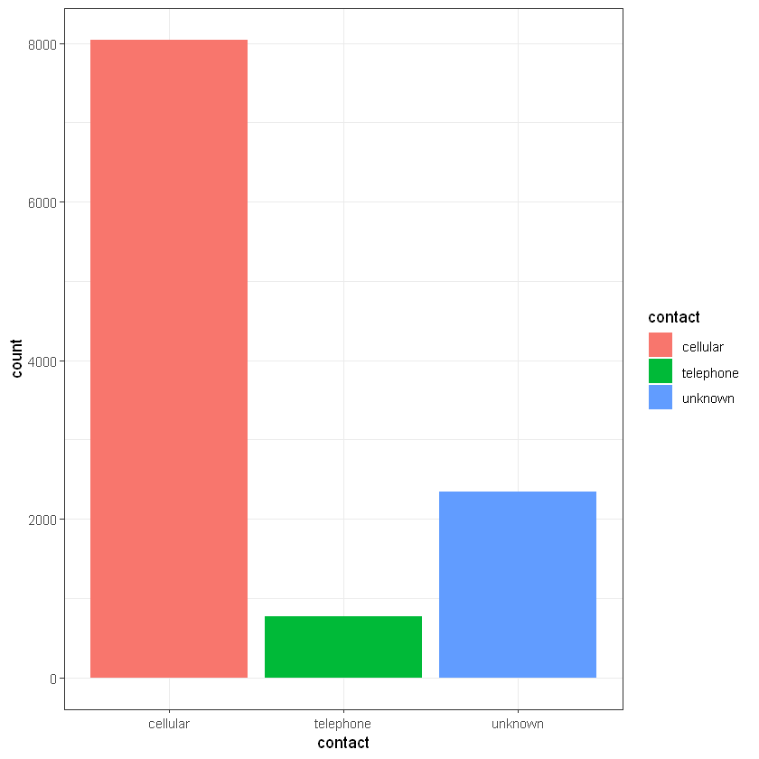

# install.packages("C50")
# install.packages("xgboost")
# install.packages("scorecard")
# install.packages("lightgbm")
# install.packages("Matrix")
# install.packages("scorecard") 7 Дерева рішень. Класифікація. Депозити
Курс: “Математичне моделювання в R”
У даній частині навчального процесу потрібно побудувати математичні моделі класифікації клієнтів на основі алгоритму дерева рішень та перевірити їх на тестовій вибірці.
7.1 Dataset description
Abstract
The data is related with direct marketing campaigns (phone calls) of a Portuguese banking institution. The classification goal is to predict if the client will subscribe a term deposit (variable y).
Data Set Information:
The data is related with direct marketing campaigns of a Portuguese banking institution. The marketing campaigns were based on phone calls. Often, more than one contact to the same client was required, in order to access if the product (bank term deposit) would be (‘yes’) or not (‘no’) subscribed.
There are four datasets: 1. bank-additional-full.csv with all examples (41188) and 20 inputs, ordered by date (from May 2008 to November 2010), very close to the data analyzed in [Moro et al., 2014] 2. bank-additional.csv with 10% of the examples (4119), randomly selected from 1), and 20 inputs. 3. bank-full.csv with all examples and 17 inputs, ordered by date (older version of this dataset with less inputs). 4. bank.csv with 10% of the examples and 17 inputs, randomly selected from 3 (older version of this dataset with less inputs).
The smallest datasets are provided to test more computationally demanding machine learning algorithms (e.g., SVM).
The classification goal is to predict if the client will subscribe (yes/no) a term deposit (variable y).
Attribute Information
Input variables: bank client data:
| No | Title | Description | Data Type | Values |
|---|---|---|---|---|
| 1 | age |
numeric | ||
| 2 | job |
type of job | categorical | ‘admin.’, ‘blue-collar’, ‘entrepreneur’, ‘housemaid’, ‘management’, ‘retired’, ‘self-employed’, ‘services’, ‘student’, ‘technician’, ‘unemployed’, ‘unknown’ |
| 3 | marital |
marital status | categorical | ‘divorced’,‘married’,‘single’,‘unknown’; note: ‘divorced’ means divorced or widowed |
| 4 | education |
categorical | ‘basic.4y’,‘basic.6y’,‘basic.9y’,‘high.school’,‘illiterate’,‘professional.course’,‘university.degree’,‘unknown’ | |
| 5 | default |
has credit in default? | categorical | ‘no’,‘yes’,‘unknown’ |
| 6 | housing |
has housing loan? | categorical | ‘no’,‘yes’,‘unknown’ |
| 7 | loan |
has personal loan? | categorical | ‘no’,‘yes’,‘unknown’ |
Input variables: related with the last contact of the current campaign:
| No | Title | Description | Data Type | Values |
|---|---|---|---|---|
| 8 | contact | contact communication type | categorical | ‘cellular’,‘telephone’ |
| 9 | month | last contact month of year | categorical | ‘jan’, ‘feb’, ‘mar’, …, ‘nov’, ‘dec’ |
| 10 | day_of_week | last contact day of the week | categorical | ‘mon’,‘tue’,‘wed’,‘thu’,‘fri’ |
| 11 | duration | last contact duration, in seconds | numeric |
duration - Important note: this attribute highly affects the output target (e.g., if duration=0 then y=‘no’). Yet, the duration is not known before a call is performed. Also, after the end of the call y is obviously known. Thus, this input should only be included for benchmark purposes and should be discarded if the intention is to have a realistic predictive model.
Input variables: other attributes:
| No | Title | Description | Data Type | Values |
|---|---|---|---|---|
| 12 | campaign |
number of contacts performed during this campaign and for this client | numeric | includes last contact |
| 13 | pdays |
number of days that passed by after the client was last contacted from a previous campaign | numeric | 999 mean client was not previously contacted |
| 14 | previous |
number of contacts performed before this campaign and for this client | numeric | |
| 15 | poutcome |
outcome of the previous marketing campaign | categorical | ‘failure’,‘nonexistent’,‘success’ |
Input variables: social and economic context attributes
| No | Title | Description | Data Type | Values |
|---|---|---|---|---|
| 16 | emp.var.rate |
employment variation rate - quarterly indicator | numeric | |
| 17 | cons.price.idx |
consumer price index - monthly indicator | numeric | |
| 18 | cons.conf.idx |
consumer confidence index - monthly indicator | numeric | |
| 19 | euribor3m |
euribor 3 month rate - daily indicator | numeric | |
| 20 | nr.employed |
number of employees - quarterly indicator | numeric |
Output variable (desired target):
| No | Title | Description | Data Type | Values |
|---|---|---|---|---|
| 21 | y |
has the client subscribed a term deposit? | binary | ‘yes’,‘no’ |
Source: https://archive.ics.uci.edu/ml/datasets/bank+marketing
7.2 Data load and preview
Для початку завантажимо дані у змінну data:
data <- read.csv("https://raw.githubusercontent.com/kleban/r-course-eng/main/data/banking.csv",
na.strings = c("", " ", "NA", "NULL"), # fix missing as NA if present
stringsAsFactors = TRUE) # set strings as factor, we need this for some algorithms
#use + unknown with na.strings if you want to play with missing
#data <- read.csv("data/banking.csv", na.strings = c("", " ", "NA", "NULL", "unknown"))Переглянемо структуру вибірки даних з str():
str(data)'data.frame': 11162 obs. of 17 variables:
$ age : int 59 56 41 55 54 42 56 60 37 28 ...
$ job : Factor w/ 12 levels "admin.","blue-collar",..: 1 1 10 8 1 5 5 6 10 8 ...
$ marital : Factor w/ 3 levels "divorced","married",..: 2 2 2 2 2 3 2 1 2 3 ...
$ education: Factor w/ 4 levels "primary","secondary",..: 2 2 2 2 3 3 3 2 2 2 ...
$ default : Factor w/ 2 levels "no","yes": 1 1 1 1 1 1 1 1 1 1 ...
$ balance : int 2343 45 1270 2476 184 0 830 545 1 5090 ...
$ housing : Factor w/ 2 levels "no","yes": 2 1 2 2 1 2 2 2 2 2 ...
$ loan : Factor w/ 2 levels "no","yes": 1 1 1 1 1 2 2 1 1 1 ...
$ contact : Factor w/ 3 levels "cellular","telephone",..: 3 3 3 3 3 3 3 3 3 3 ...
$ day : int 5 5 5 5 5 5 6 6 6 6 ...
$ month : Factor w/ 12 levels "apr","aug","dec",..: 9 9 9 9 9 9 9 9 9 9 ...
$ duration : int 1042 1467 1389 579 673 562 1201 1030 608 1297 ...
$ campaign : int 1 1 1 1 2 2 1 1 1 3 ...
$ pdays : int -1 -1 -1 -1 -1 -1 -1 -1 -1 -1 ...
$ previous : int 0 0 0 0 0 0 0 0 0 0 ...
$ poutcome : Factor w/ 4 levels "failure","other",..: 4 4 4 4 4 4 4 4 4 4 ...
$ deposit : Factor w/ 2 levels "no","yes": 2 2 2 2 2 2 2 2 2 2 ...Переглянемо вигляд перших рядків даних з head():
head(data)| age | job | marital | education | default | balance | housing | loan | contact | day | month | duration | campaign | pdays | previous | poutcome | deposit | |
|---|---|---|---|---|---|---|---|---|---|---|---|---|---|---|---|---|---|
| <int> | <fct> | <fct> | <fct> | <fct> | <int> | <fct> | <fct> | <fct> | <int> | <fct> | <int> | <int> | <int> | <int> | <fct> | <fct> | |
| 1 | 59 | admin. | married | secondary | no | 2343 | yes | no | unknown | 5 | may | 1042 | 1 | -1 | 0 | unknown | yes |
| 2 | 56 | admin. | married | secondary | no | 45 | no | no | unknown | 5 | may | 1467 | 1 | -1 | 0 | unknown | yes |
| 3 | 41 | technician | married | secondary | no | 1270 | yes | no | unknown | 5 | may | 1389 | 1 | -1 | 0 | unknown | yes |
| 4 | 55 | services | married | secondary | no | 2476 | yes | no | unknown | 5 | may | 579 | 1 | -1 | 0 | unknown | yes |
| 5 | 54 | admin. | married | tertiary | no | 184 | no | no | unknown | 5 | may | 673 | 2 | -1 | 0 | unknown | yes |
| 6 | 42 | management | single | tertiary | no | 0 | yes | yes | unknown | 5 | may | 562 | 2 | -1 | 0 | unknown | yes |
Описова статистика факторів:
summary(data) age job marital education
Min. :18.00 management :2566 divorced:1293 primary :1500
1st Qu.:32.00 blue-collar:1944 married :6351 secondary:5476
Median :39.00 technician :1823 single :3518 tertiary :3689
Mean :41.23 admin. :1334 unknown : 497
3rd Qu.:49.00 services : 923
Max. :95.00 retired : 778
(Other) :1794
default balance housing loan contact
no :10994 Min. :-6847 no :5881 no :9702 cellular :8042
yes: 168 1st Qu.: 122 yes:5281 yes:1460 telephone: 774
Median : 550 unknown :2346
Mean : 1529
3rd Qu.: 1708
Max. :81204
day month duration campaign
Min. : 1.00 may :2824 Min. : 2 Min. : 1.000
1st Qu.: 8.00 aug :1519 1st Qu.: 138 1st Qu.: 1.000
Median :15.00 jul :1514 Median : 255 Median : 2.000
Mean :15.66 jun :1222 Mean : 372 Mean : 2.508
3rd Qu.:22.00 nov : 943 3rd Qu.: 496 3rd Qu.: 3.000
Max. :31.00 apr : 923 Max. :3881 Max. :63.000
(Other):2217
pdays previous poutcome deposit
Min. : -1.00 Min. : 0.0000 failure:1228 no :5873
1st Qu.: -1.00 1st Qu.: 0.0000 other : 537 yes:5289
Median : -1.00 Median : 0.0000 success:1071
Mean : 51.33 Mean : 0.8326 unknown:8326
3rd Qu.: 20.75 3rd Qu.: 1.0000
Max. :854.00 Max. :58.0000
Перевіримо вибірку на наявність пропусків:
suppressMessages(library(mice))
md.pattern(data) # OK /\ /\
{ `---' }
{ O O }
==> V <== No need for mice. This data set is completely observed.
\ \|/ /
`-----'
| age | job | marital | education | default | balance | housing | loan | contact | day | month | duration | campaign | pdays | previous | poutcome | deposit | ||
|---|---|---|---|---|---|---|---|---|---|---|---|---|---|---|---|---|---|---|
| 11162 | 1 | 1 | 1 | 1 | 1 | 1 | 1 | 1 | 1 | 1 | 1 | 1 | 1 | 1 | 1 | 1 | 1 | 0 |
| 0 | 0 | 0 | 0 | 0 | 0 | 0 | 0 | 0 | 0 | 0 | 0 | 0 | 0 | 0 | 0 | 0 | 0 |
anyNA(data)
FALSE
7.3 Data visualization
Вік клієнта (age):
library(ggplot2)
ggplot(data, aes(age)) +
geom_histogram(bins = 20, alpha = 0.5, fill = 'blue', color='black') +
theme_bw()Робота клієнта (job):
ggplot(data, aes(job)) +
geom_bar(aes(fill = job)) +
theme_bw()library(gmodels)
CrossTable(data$job, data$deposit)
# more loyal to deposits are management, retired, student, unemployed ))
Cell Contents
|-------------------------|
| N |
| Chi-square contribution |
| N / Row Total |
| N / Col Total |
| N / Table Total |
|-------------------------|
Total Observations in Table: 11162
| data$deposit
data$job | no | yes | Row Total |
--------------|-----------|-----------|-----------|
admin. | 703 | 631 | 1334 |
| 0.002 | 0.002 | |
| 0.527 | 0.473 | 0.120 |
| 0.120 | 0.119 | |
| 0.063 | 0.057 | |
--------------|-----------|-----------|-----------|
blue-collar | 1236 | 708 | 1944 |
| 44.415 | 49.320 | |
| 0.636 | 0.364 | 0.174 |
| 0.210 | 0.134 | |
| 0.111 | 0.063 | |
--------------|-----------|-----------|-----------|
entrepreneur | 205 | 123 | 328 |
| 6.090 | 6.762 | |
| 0.625 | 0.375 | 0.029 |
| 0.035 | 0.023 | |
| 0.018 | 0.011 | |
--------------|-----------|-----------|-----------|
housemaid | 165 | 109 | 274 |
| 3.010 | 3.343 | |
| 0.602 | 0.398 | 0.025 |
| 0.028 | 0.021 | |
| 0.015 | 0.010 | |
--------------|-----------|-----------|-----------|
management | 1265 | 1301 | 2566 |
| 5.367 | 5.960 | |
| 0.493 | 0.507 | 0.230 |
| 0.215 | 0.246 | |
| 0.113 | 0.117 | |
--------------|-----------|-----------|-----------|
retired | 262 | 516 | 778 |
| 53.042 | 58.899 | |
| 0.337 | 0.663 | 0.070 |
| 0.045 | 0.098 | |
| 0.023 | 0.046 | |
--------------|-----------|-----------|-----------|
self-employed | 218 | 187 | 405 |
| 0.113 | 0.125 | |
| 0.538 | 0.462 | 0.036 |
| 0.037 | 0.035 | |
| 0.020 | 0.017 | |
--------------|-----------|-----------|-----------|
services | 554 | 369 | 923 |
| 9.621 | 10.683 | |
| 0.600 | 0.400 | 0.083 |
| 0.094 | 0.070 | |
| 0.050 | 0.033 | |
--------------|-----------|-----------|-----------|
student | 91 | 269 | 360 |
| 51.136 | 56.782 | |
| 0.253 | 0.747 | 0.032 |
| 0.015 | 0.051 | |
| 0.008 | 0.024 | |
--------------|-----------|-----------|-----------|
technician | 983 | 840 | 1823 |
| 0.591 | 0.656 | |
| 0.539 | 0.461 | 0.163 |
| 0.167 | 0.159 | |
| 0.088 | 0.075 | |
--------------|-----------|-----------|-----------|
unemployed | 155 | 202 | 357 |
| 5.741 | 6.375 | |
| 0.434 | 0.566 | 0.032 |
| 0.026 | 0.038 | |
| 0.014 | 0.018 | |
--------------|-----------|-----------|-----------|
unknown | 36 | 34 | 70 |
| 0.019 | 0.021 | |
| 0.514 | 0.486 | 0.006 |
| 0.006 | 0.006 | |
| 0.003 | 0.003 | |
--------------|-----------|-----------|-----------|
Column Total | 5873 | 5289 | 11162 |
| 0.526 | 0.474 | |
--------------|-----------|-----------|-----------|
Сімейний статус (marital):
ggplot(data, aes(marital)) +
geom_bar(aes(fill = marital)) +
theme_bw()CrossTable(data$marital, data$deposit)
# married are not very loyal to deposits
# but singles is more loyal
Cell Contents
|-------------------------|
| N |
| Chi-square contribution |
| N / Row Total |
| N / Col Total |
| N / Table Total |
|-------------------------|
Total Observations in Table: 11162
| data$deposit
data$marital | no | yes | Row Total |
-------------|-----------|-----------|-----------|
divorced | 671 | 622 | 1293 |
| 0.128 | 0.142 | |
| 0.519 | 0.481 | 0.116 |
| 0.114 | 0.118 | |
| 0.060 | 0.056 | |
-------------|-----------|-----------|-----------|
married | 3596 | 2755 | 6351 |
| 19.361 | 21.499 | |
| 0.566 | 0.434 | 0.569 |
| 0.612 | 0.521 | |
| 0.322 | 0.247 | |
-------------|-----------|-----------|-----------|
single | 1606 | 1912 | 3518 |
| 32.436 | 36.018 | |
| 0.457 | 0.543 | 0.315 |
| 0.273 | 0.362 | |
| 0.144 | 0.171 | |
-------------|-----------|-----------|-----------|
Column Total | 5873 | 5289 | 11162 |
| 0.526 | 0.474 | |
-------------|-----------|-----------|-----------|
Освіта (education):
ggplot(data, aes(education)) +
geom_bar(aes(fill = education)) +
theme_bw()CrossTable(data$education, data$deposit)
# people with tertiary education is more loyal than other groups
Cell Contents
|-------------------------|
| N |
| Chi-square contribution |
| N / Row Total |
| N / Col Total |
| N / Table Total |
|-------------------------|
Total Observations in Table: 11162
| data$deposit
data$education | no | yes | Row Total |
---------------|-----------|-----------|-----------|
primary | 909 | 591 | 1500 |
| 18.172 | 20.179 | |
| 0.606 | 0.394 | 0.134 |
| 0.155 | 0.112 | |
| 0.081 | 0.053 | |
---------------|-----------|-----------|-----------|
secondary | 3026 | 2450 | 5476 |
| 7.272 | 8.075 | |
| 0.553 | 0.447 | 0.491 |
| 0.515 | 0.463 | |
| 0.271 | 0.219 | |
---------------|-----------|-----------|-----------|
tertiary | 1693 | 1996 | 3689 |
| 31.688 | 35.187 | |
| 0.459 | 0.541 | 0.330 |
| 0.288 | 0.377 | |
| 0.152 | 0.179 | |
---------------|-----------|-----------|-----------|
unknown | 245 | 252 | 497 |
| 1.041 | 1.156 | |
| 0.493 | 0.507 | 0.045 |
| 0.042 | 0.048 | |
| 0.022 | 0.023 | |
---------------|-----------|-----------|-----------|
Column Total | 5873 | 5289 | 11162 |
| 0.526 | 0.474 | |
---------------|-----------|-----------|-----------|
Дефолт (default):
ggplot(data, aes(default)) +
geom_bar(aes(fill = default)) +
theme_bw()CrossTable(data$default, data$deposit)
# defaults not very loyal to deposits, but why? ))))))
Cell Contents
|-------------------------|
| N |
| Chi-square contribution |
| N / Row Total |
| N / Col Total |
| N / Table Total |
|-------------------------|
Total Observations in Table: 11162
| data$deposit
data$default | no | yes | Row Total |
-------------|-----------|-----------|-----------|
no | 5757 | 5237 | 10994 |
| 0.132 | 0.146 | |
| 0.524 | 0.476 | 0.985 |
| 0.980 | 0.990 | |
| 0.516 | 0.469 | |
-------------|-----------|-----------|-----------|
yes | 116 | 52 | 168 |
| 8.621 | 9.573 | |
| 0.690 | 0.310 | 0.015 |
| 0.020 | 0.010 | |
| 0.010 | 0.005 | |
-------------|-----------|-----------|-----------|
Column Total | 5873 | 5289 | 11162 |
| 0.526 | 0.474 | |
-------------|-----------|-----------|-----------|
Баланс (balance):
ggplot(data, aes(balance)) +
geom_histogram(bins = 30, alpha = 0.5, fill = 'blue', color='black') +
theme_bw()
# looks like balance data has outliersНаявність кредиту на житло (housing):
ggplot(data, aes(housing)) +
geom_bar(aes(fill = housing)) +
theme_bw()CrossTable(data$housing, data$deposit)
# people without housing load logicaly more often can do deposits
Cell Contents
|-------------------------|
| N |
| Chi-square contribution |
| N / Row Total |
| N / Col Total |
| N / Table Total |
|-------------------------|
Total Observations in Table: 11162
| data$deposit
data$housing | no | yes | Row Total |
-------------|-----------|-----------|-----------|
no | 2527 | 3354 | 5881 |
| 104.023 | 115.509 | |
| 0.430 | 0.570 | 0.527 |
| 0.430 | 0.634 | |
| 0.226 | 0.300 | |
-------------|-----------|-----------|-----------|
yes | 3346 | 1935 | 5281 |
| 115.842 | 128.633 | |
| 0.634 | 0.366 | 0.473 |
| 0.570 | 0.366 | |
| 0.300 | 0.173 | |
-------------|-----------|-----------|-----------|
Column Total | 5873 | 5289 | 11162 |
| 0.526 | 0.474 | |
-------------|-----------|-----------|-----------|
Наявність позики (loan):
ggplot(data, aes(loan)) +
geom_bar(aes(fill = loan)) +
theme_bw()CrossTable(data$loan, data$deposit)
Cell Contents
|-------------------------|
| N |
| Chi-square contribution |
| N / Row Total |
| N / Col Total |
| N / Table Total |
|-------------------------|
Total Observations in Table: 11162
| data$deposit
data$loan | no | yes | Row Total |
-------------|-----------|-----------|-----------|
no | 4897 | 4805 | 9702 |
| 8.459 | 9.393 | |
| 0.505 | 0.495 | 0.869 |
| 0.834 | 0.908 | |
| 0.439 | 0.430 | |
-------------|-----------|-----------|-----------|
yes | 976 | 484 | 1460 |
| 56.214 | 62.421 | |
| 0.668 | 0.332 | 0.131 |
| 0.166 | 0.092 | |
| 0.087 | 0.043 | |
-------------|-----------|-----------|-----------|
Column Total | 5873 | 5289 | 11162 |
| 0.526 | 0.474 | |
-------------|-----------|-----------|-----------|
# Тип комунікації (contact):
ggplot(data, aes(contact)) +
geom_bar(aes(fill = contact)) +
theme_bw()
CrossTable(data$contact, data$deposit)
# cellular communication channel looks like the best way to increase deposits count
# people with cellular devices has more money?
Cell Contents
|-------------------------|
| N |
| Chi-square contribution |
| N / Row Total |
| N / Col Total |
| N / Table Total |
|-------------------------|
Total Observations in Table: 11162
| data$deposit
data$contact | no | yes | Row Total |
-------------|-----------|-----------|-----------|
cellular | 3673 | 4369 | 8042 |
| 73.685 | 81.821 | |
| 0.457 | 0.543 | 0.720 |
| 0.625 | 0.826 | |
| 0.329 | 0.391 | |
-------------|-----------|-----------|-----------|
telephone | 384 | 390 | 774 |
| 1.327 | 1.474 | |
| 0.496 | 0.504 | 0.069 |
| 0.065 | 0.074 | |
| 0.034 | 0.035 | |
-------------|-----------|-----------|-----------|
unknown | 1816 | 530 | 2346 |
| 274.060 | 304.321 | |
| 0.774 | 0.226 | 0.210 |
| 0.309 | 0.100 | |
| 0.163 | 0.047 | |
-------------|-----------|-----------|-----------|
Column Total | 5873 | 5289 | 11162 |
| 0.526 | 0.474 | |
-------------|-----------|-----------|-----------|
День місяця (day):
ggplot(data, aes(day)) +
geom_histogram(bins = 25, alpha = 0.5, fill = 'blue', color='black') +
theme_bw()Місяць (month):
ggplot(data, aes(month)) +
geom_bar(aes(fill = month)) +
theme_bw()# So, lets replace our month with ordered factor for correct visualization
suppressMessages(library(dplyr))
data <- data |>
mutate(month = factor(month, levels=c("jan","feb","mar",
"apr","may","jun","jul","aug","sep",
"oct","nov","dec"),ordered=TRUE))ggplot(data, aes(month)) +
geom_bar(aes(fill = month)) +
theme_bw()CrossTable(data$month, data$deposit)
Cell Contents
|-------------------------|
| N |
| Chi-square contribution |
| N / Row Total |
| N / Col Total |
| N / Table Total |
|-------------------------|
Total Observations in Table: 11162
| data$deposit
data$month | no | yes | Row Total |
-------------|-----------|-----------|-----------|
jan | 202 | 142 | 344 |
| 2.437 | 2.706 | |
| 0.587 | 0.413 | 0.031 |
| 0.034 | 0.027 | |
| 0.018 | 0.013 | |
-------------|-----------|-----------|-----------|
feb | 335 | 441 | 776 |
| 13.159 | 14.612 | |
| 0.432 | 0.568 | 0.070 |
| 0.057 | 0.083 | |
| 0.030 | 0.040 | |
-------------|-----------|-----------|-----------|
mar | 28 | 248 | 276 |
| 94.619 | 105.067 | |
| 0.101 | 0.899 | 0.025 |
| 0.005 | 0.047 | |
| 0.003 | 0.022 | |
-------------|-----------|-----------|-----------|
apr | 346 | 577 | 923 |
| 40.155 | 44.588 | |
| 0.375 | 0.625 | 0.083 |
| 0.059 | 0.109 | |
| 0.031 | 0.052 | |
-------------|-----------|-----------|-----------|
may | 1899 | 925 | 2824 |
| 114.862 | 127.545 | |
| 0.672 | 0.328 | 0.253 |
| 0.323 | 0.175 | |
| 0.170 | 0.083 | |
-------------|-----------|-----------|-----------|
jun | 676 | 546 | 1222 |
| 1.697 | 1.884 | |
| 0.553 | 0.447 | 0.109 |
| 0.115 | 0.103 | |
| 0.061 | 0.049 | |
-------------|-----------|-----------|-----------|
jul | 887 | 627 | 1514 |
| 10.257 | 11.390 | |
| 0.586 | 0.414 | 0.136 |
| 0.151 | 0.119 | |
| 0.079 | 0.056 | |
-------------|-----------|-----------|-----------|
aug | 831 | 688 | 1519 |
| 1.262 | 1.402 | |
| 0.547 | 0.453 | 0.136 |
| 0.141 | 0.130 | |
| 0.074 | 0.062 | |
-------------|-----------|-----------|-----------|
sep | 50 | 269 | 319 |
| 82.740 | 91.876 | |
| 0.157 | 0.843 | 0.029 |
| 0.009 | 0.051 | |
| 0.004 | 0.024 | |
-------------|-----------|-----------|-----------|
oct | 69 | 323 | 392 |
| 91.338 | 101.423 | |
| 0.176 | 0.824 | 0.035 |
| 0.012 | 0.061 | |
| 0.006 | 0.029 | |
-------------|-----------|-----------|-----------|
nov | 540 | 403 | 943 |
| 3.872 | 4.300 | |
| 0.573 | 0.427 | 0.084 |
| 0.092 | 0.076 | |
| 0.048 | 0.036 | |
-------------|-----------|-----------|-----------|
dec | 10 | 100 | 110 |
| 39.605 | 43.979 | |
| 0.091 | 0.909 | 0.010 |
| 0.002 | 0.019 | |
| 0.001 | 0.009 | |
-------------|-----------|-----------|-----------|
Column Total | 5873 | 5289 | 11162 |
| 0.526 | 0.474 | |
-------------|-----------|-----------|-----------|
Тривалість останнього контакту (duration):
ggplot(data, aes(duration)) +
geom_histogram(bins = 100, alpha = 0.5, fill = 'blue', color='black') +
theme_bw()Кількість контактів протягом поточної кампанії (campaign):
ggplot(data, aes(campaign)) +
geom_histogram(bins = 30, alpha = 0.5, fill = 'blue', color='black') +
theme_bw()Кількість днів від попередньої акції (pday):
ggplot(data, aes(pdays)) +
geom_histogram(bins = 20, alpha = 0.5, fill = 'blue', color='black') +
theme_bw()
Кількість контактів до початку поточної кампанії (previous):
ggplot(data, aes(previous)) +
geom_histogram(bins = 50, alpha = 0.5, fill = 'blue', color='black') +
theme_bw()Результат попередньої кампанії (poutcome):
ggplot(data, aes(poutcome)) +
geom_bar(aes(fill = poutcome)) +
theme_bw()CrossTable(data$poutcome, data$deposit)
# people with previous success status also loyal for new propositions
Cell Contents
|-------------------------|
| N |
| Chi-square contribution |
| N / Row Total |
| N / Col Total |
| N / Table Total |
|-------------------------|
Total Observations in Table: 11162
| data$deposit
data$poutcome | no | yes | Row Total |
--------------|-----------|-----------|-----------|
failure | 610 | 618 | 1228 |
| 2.020 | 2.243 | |
| 0.497 | 0.503 | 0.110 |
| 0.104 | 0.117 | |
| 0.055 | 0.055 | |
--------------|-----------|-----------|-----------|
other | 230 | 307 | 537 |
| 9.773 | 10.852 | |
| 0.428 | 0.572 | 0.048 |
| 0.039 | 0.058 | |
| 0.021 | 0.028 | |
--------------|-----------|-----------|-----------|
success | 93 | 978 | 1071 |
| 392.866 | 436.245 | |
| 0.087 | 0.913 | 0.096 |
| 0.016 | 0.185 | |
| 0.008 | 0.088 | |
--------------|-----------|-----------|-----------|
unknown | 4940 | 3386 | 8326 |
| 71.378 | 79.259 | |
| 0.593 | 0.407 | 0.746 |
| 0.841 | 0.640 | |
| 0.443 | 0.303 | |
--------------|-----------|-----------|-----------|
Column Total | 5873 | 5289 | 11162 |
| 0.526 | 0.474 | |
--------------|-----------|-----------|-----------|
Результат укладання або відсутність укладання договору (deposit):
ggplot(data, aes(deposit)) +
geom_bar(aes(fill = deposit)) +
theme_bw()CrossTable(data$deposit)
Cell Contents
|-------------------------|
| N |
| N / Table Total |
|-------------------------|
Total Observations in Table: 11162
| no | yes |
|-----------|-----------|
| 5873 | 5289 |
| 0.526 | 0.474 |
|-----------|-----------|
7.4 Data preprocessing
Перетворимо значення deposit до 0 і 1:
data$deposit <- ifelse(data$deposit == "yes", 1, 0)Видалимо duration, адже цей параметр чітко вказує на факт укладання угоди, такі дані називаються leak:
data$duration <- NULLСтворимо новий параметр pdays_flag, який вказує чи був контакт з клієнтом раніше:
data$pdays_flag <- ifelse(data$pdays > 0, 1, 0)head(data)| age | job | marital | education | default | balance | housing | loan | contact | day | month | campaign | pdays | previous | poutcome | deposit | pdays_flag | |
|---|---|---|---|---|---|---|---|---|---|---|---|---|---|---|---|---|---|
| <int> | <fct> | <fct> | <fct> | <fct> | <int> | <fct> | <fct> | <fct> | <int> | <ord> | <int> | <int> | <int> | <fct> | <dbl> | <dbl> | |
| 1 | 59 | admin. | married | secondary | no | 2343 | yes | no | unknown | 5 | may | 1 | -1 | 0 | unknown | 1 | 0 |
| 2 | 56 | admin. | married | secondary | no | 45 | no | no | unknown | 5 | may | 1 | -1 | 0 | unknown | 1 | 0 |
| 3 | 41 | technician | married | secondary | no | 1270 | yes | no | unknown | 5 | may | 1 | -1 | 0 | unknown | 1 | 0 |
| 4 | 55 | services | married | secondary | no | 2476 | yes | no | unknown | 5 | may | 1 | -1 | 0 | unknown | 1 | 0 |
| 5 | 54 | admin. | married | tertiary | no | 184 | no | no | unknown | 5 | may | 2 | -1 | 0 | unknown | 1 | 0 |
| 6 | 42 | management | single | tertiary | no | 0 | yes | yes | unknown | 5 | may | 2 | -1 | 0 | unknown | 1 | 0 |
Створимо новий параметр poutcome_success, який вказує чи була попередня кампанія з цим клієнтом “успішною для банку”:
data$poutcoume_success <- ifelse(data$poutcome == "success", 1, 0)7.5 Train/test split
Задаємо seed для генератора випадкових чисел
Train 65%, test 35%
set.seed(111)
suppressMessages(library(caret))
index = createDataPartition(data$deposit, p = 0.65, list = FALSE)
train_data = data[index, ]
test_data = data[-index, ]CrossTable(train_data$deposit)
CrossTable(test_data$deposit)
Cell Contents
|-------------------------|
| N |
| N / Table Total |
|-------------------------|
Total Observations in Table: 7256
| 0 | 1 |
|-----------|-----------|
| 3816 | 3440 |
| 0.526 | 0.474 |
|-----------|-----------|
Cell Contents
|-------------------------|
| N |
| N / Table Total |
|-------------------------|
Total Observations in Table: 3906
| 0 | 1 |
|-----------|-----------|
| 2057 | 1849 |
| 0.527 | 0.473 |
|-----------|-----------|
7.6 Decision trees with rpart()
Для побудови дерев рішень у R є ряд пакетів та алгоритмів. Розглянемо пакет rpart.
#install.packages("rpart")
library(rpart)
rpart_model <- rpart(deposit ~ ., train_data)Виведемо опис моделі:
rpart_modeln= 7256
node), split, n, deviance, yval
* denotes terminal node
1) root 7256 1809.12900 0.4740904
2) poutcome=failure,other,unknown 6563 1605.86300 0.4270913
4) contact=unknown 1543 272.24240 0.2287751 *
5) contact=cellular,telephone 5020 1254.28300 0.4880478
10) housing=yes 2139 507.93360 0.3880318 *
11) housing=no 2881 709.06630 0.5623048
22) balance< 105.5 636 150.38990 0.3836478 *
23) balance>=105.5 2245 532.62540 0.6129176 *
3) poutcome=success 693 51.47475 0.9191919 *Дуже детальний опис:
summary(rpart_model)Call:
rpart(formula = deposit ~ ., data = train_data)
n= 7256
CP nsplit rel error xerror xstd
1 0.08390285 0 1.0000000 1.0004337 0.001224021
2 0.04385421 1 0.9160972 0.9165627 0.005207633
3 0.02060824 2 0.8722429 0.8731088 0.006530786
4 0.01439973 3 0.8516347 0.8528095 0.007275812
5 0.01000000 4 0.8372350 0.8459897 0.007777416
Variable importance
poutcome poutcoume_success contact housing
33 33 17 8
balance job pdays month
6 1 1 1
Node number 1: 7256 observations, complexity param=0.08390285
mean=0.4740904, MSE=0.2493287
left son=2 (6563 obs) right son=3 (693 obs)
Primary splits:
poutcome splits as LLRL, improve=0.08390285, (0 missing)
poutcoume_success < 0.5 to the left, improve=0.08390285, (0 missing)
contact splits as RRL, improve=0.06524266, (0 missing)
pdays < 9.5 to the left, improve=0.04926922, (0 missing)
previous < 0.5 to the left, improve=0.04820004, (0 missing)
Surrogate splits:
poutcoume_success < 0.5 to the left, agree=1.000, adj=1.000, (0 split)
age < 91 to the left, agree=0.905, adj=0.003, (0 split)
Node number 2: 6563 observations, complexity param=0.04385421
mean=0.4270913, MSE=0.2446843
left son=4 (1543 obs) right son=5 (5020 obs)
Primary splits:
contact splits as RRL, improve=0.04940515, (0 missing)
housing splits as RL, improve=0.03656129, (0 missing)
age < 60.5 to the left, improve=0.02289822, (0 missing)
job splits as LLLLLRLLRLRL, improve=0.02007437, (0 missing)
balance < 798 to the left, improve=0.01917691, (0 missing)
Surrogate splits:
campaign < 24.5 to the right, agree=0.766, adj=0.003, (0 split)
Node number 3: 693 observations
mean=0.9191919, MSE=0.07427813
Node number 4: 1543 observations
mean=0.2287751, MSE=0.1764371
Node number 5: 5020 observations, complexity param=0.02060824
mean=0.4880478, MSE=0.2498571
left son=10 (2139 obs) right son=11 (2881 obs)
Primary splits:
housing splits as RL, improve=0.02972452, (0 missing)
balance < 799.5 to the left, improve=0.02236410, (0 missing)
job splits as LLLLLRLLRLRL, improve=0.02093907, (0 missing)
age < 59.5 to the left, improve=0.02067340, (0 missing)
loan splits as RL, improve=0.01407420, (0 missing)
Surrogate splits:
job splits as LLRRRRRLRRRR, agree=0.630, adj=0.132, (0 split)
pdays < 165.5 to the right, agree=0.623, adj=0.115, (0 split)
month splits as LLLLLRRRRRRR, agree=0.615, adj=0.096, (0 split)
poutcome splits as LR-R, agree=0.604, adj=0.071, (0 split)
previous < 0.5 to the right, agree=0.599, adj=0.059, (0 split)
Node number 10: 2139 observations
mean=0.3880318, MSE=0.2374631
Node number 11: 2881 observations, complexity param=0.01439973
mean=0.5623048, MSE=0.2461181
left son=22 (636 obs) right son=23 (2245 obs)
Primary splits:
balance < 105.5 to the left, improve=0.03673982, (0 missing)
loan splits as RL, improve=0.03447328, (0 missing)
month splits as RRRRRRLLLLLL, improve=0.03024729, (0 missing)
job splits as LLLLLRLLRLRL, improve=0.02005774, (0 missing)
age < 60.5 to the left, improve=0.01886179, (0 missing)
Surrogate splits:
default splits as RL, agree=0.787, adj=0.035, (0 split)
Node number 22: 636 observations
mean=0.3836478, MSE=0.2364622
Node number 23: 2245 observations
mean=0.6129176, MSE=0.2372496
Візуалізуємо дерево рішень:
# install.packages(c("rattle", "RColorBrewer"))
suppressMessages(library(rattle))
suppressMessages(library(RColorBrewer))
fancyRpartPlot(rpart_model)
# now you can see how model model worksСтворимо два дата-фрейм для для запису результатів моделювання на тестовій вибірці. Одразу додамо у набори даних реальні значення результатів маркетингової акції deposit та модельовані значення
Дані тренувальної вибірки будуть використовуватися для визначення оптимальної cutoff лінії, а тестової для порівняння моделей між собою.
train_results <- data.frame(No = c(1:nrow(train_data)),
deposit = train_data$deposit,
RPartPredicted = predict(rpart_model, train_data))
test_results <- data.frame(No = c(1:nrow(test_data)),
deposit = test_data$deposit,
RPartPredicted = predict(rpart_model, test_data))
head(test_results)| No | deposit | RPartPredicted | |
|---|---|---|---|
| <int> | <dbl> | <dbl> | |
| 1 | 1 | 1 | 0.2287751 |
| 2 | 2 | 1 | 0.2287751 |
| 4 | 3 | 1 | 0.2287751 |
| 7 | 4 | 1 | 0.2287751 |
| 8 | 5 | 1 | 0.2287751 |
| 9 | 6 | 1 | 0.2287751 |
Визначимо оптимальну лінію розподілу на 0 і 1 для тренувальної вибірки за допомогою пакету InformationValue:
suppressMessages(library(InformationValue))
optCutOff <- optimalCutoff(train_results$deposit, train_results$RPartPredicted)
optCutOff
0.389191919191919
Побудуємо ROC-криву для тестової вибірки:
plotROC(test_results$deposit, test_results$RPartPredicted)
Сформуємо набір класів 0 і 1 для тестового набору даних:
test_results$RPartPredicted_Class <- ifelse(test_results$RPartPredicted > optCutOff, 1, 0)Confusion matrix:
cm <- caret::confusionMatrix(factor(test_results$deposit),
factor(test_results$RPartPredicted_Class),
positive = "1")
cmConfusion Matrix and Statistics
Reference
Prediction 0 1
0 1504 553
1 793 1056
Accuracy : 0.6554
95% CI : (0.6403, 0.6703)
No Information Rate : 0.5881
P-Value [Acc > NIR] : < 2.2e-16
Kappa : 0.3043
Mcnemar's Test P-Value : 7.297e-11
Sensitivity : 0.6563
Specificity : 0.6548
Pos Pred Value : 0.5711
Neg Pred Value : 0.7312
Prevalence : 0.4119
Detection Rate : 0.2704
Detection Prevalence : 0.4734
Balanced Accuracy : 0.6555
'Positive' Class : 1
Переглянемо збалансовану точність класифіції:
BAcc <- cm$byClass[["Balanced Accuracy"]]
BAcc
0.655537676754586
7.7 Desicion trees with PartyKit
Побудуємо дерево рішень за допоомгою пакету partykit:
#install.packages("partykit")
suppressMessages(library(partykit))
head(train_data)
party_model <- ctree(deposit ~ ., data = train_data)| age | job | marital | education | default | balance | housing | loan | contact | day | month | campaign | pdays | previous | poutcome | deposit | pdays_flag | poutcoume_success | |
|---|---|---|---|---|---|---|---|---|---|---|---|---|---|---|---|---|---|---|
| <int> | <fct> | <fct> | <fct> | <fct> | <int> | <fct> | <fct> | <fct> | <int> | <ord> | <int> | <int> | <int> | <fct> | <dbl> | <dbl> | <dbl> | |
| 3 | 41 | technician | married | secondary | no | 1270 | yes | no | unknown | 5 | may | 1 | -1 | 0 | unknown | 1 | 0 | 0 |
| 5 | 54 | admin. | married | tertiary | no | 184 | no | no | unknown | 5 | may | 2 | -1 | 0 | unknown | 1 | 0 | 0 |
| 6 | 42 | management | single | tertiary | no | 0 | yes | yes | unknown | 5 | may | 2 | -1 | 0 | unknown | 1 | 0 | 0 |
| 11 | 38 | admin. | single | secondary | no | 100 | yes | no | unknown | 7 | may | 1 | -1 | 0 | unknown | 1 | 0 | 0 |
| 12 | 30 | blue-collar | married | secondary | no | 309 | yes | no | unknown | 7 | may | 2 | -1 | 0 | unknown | 1 | 0 | 0 |
| 14 | 46 | blue-collar | single | tertiary | no | 460 | yes | no | unknown | 7 | may | 2 | -1 | 0 | unknown | 1 | 0 | 0 |
Виведемо текстовий опис моделі:
party_model
# Looks like this model is more complex
Model formula:
deposit ~ age + job + marital + education + default + balance +
housing + loan + contact + day + month + campaign + pdays +
previous + poutcome + pdays_flag + poutcoume_success
Fitted party:
[1] root
| [2] poutcome in failure, other, unknown
| | [3] contact in cellular, telephone
| | | [4] housing in no
| | | | [5] loan in no
| | | | | [6] campaign <= 3
| | | | | | [7] job in admin., management, retired, student, unemployed
| | | | | | | [8] day <= 17: 0.733 (n = 715, err = 140.0)
| | | | | | | [9] day > 17
| | | | | | | | [10] job in admin., management, retired, unemployed: 0.583 (n = 434, err = 105.5)
| | | | | | | | [11] job in student: 0.843 (n = 51, err = 6.7)
| | | | | | [12] job in blue-collar, entrepreneur, housemaid, self-employed, services, technician, unknown
| | | | | | | [13] campaign <= 1: 0.612 (n = 415, err = 98.5)
| | | | | | | [14] campaign > 1
| | | | | | | | [15] balance <= 106
| | | | | | | | | [16] age <= 57: 0.234 (n = 94, err = 16.9)
| | | | | | | | | [17] age > 57: 0.700 (n = 10, err = 2.1)
| | | | | | | | [18] balance > 106: 0.561 (n = 321, err = 79.1)
| | | | | [19] campaign > 3
| | | | | | [20] marital in divorced, single: 0.579 (n = 195, err = 47.5)
| | | | | | [21] marital in married
| | | | | | | [22] campaign <= 5: 0.474 (n = 171, err = 42.6)
| | | | | | | [23] campaign > 5: 0.299 (n = 154, err = 32.3)
| | | | [24] loan in yes: 0.302 (n = 321, err = 67.7)
| | | [25] housing in yes
| | | | [26] campaign <= 3
| | | | | [27] marital in divorced, single: 0.455 (n = 759, err = 188.2)
| | | | | [28] marital in married: 0.372 (n = 985, err = 230.0)
| | | | [29] campaign > 3: 0.301 (n = 395, err = 83.1)
| | [30] contact in unknown
| | | [31] month <= sep
| | | | [32] marital in divorced, single: 0.275 (n = 619, err = 123.3)
| | | | [33] marital in married: 0.183 (n = 903, err = 134.9)
| | | [34] month > sep: 0.857 (n = 21, err = 2.6)
| [35] poutcome in success
| | [36] contact in cellular: 0.925 (n = 637, err = 44.4)
| | [37] contact in telephone, unknown: 0.857 (n = 56, err = 6.9)
Number of inner nodes: 18
Number of terminal nodes: 19Візуалізуємо побудоване дерево рішень:
plot(party_model)Конвернтуємо ctree() до rpart():
st <- as.simpleparty(party_model)
plot(st)Додамо прогнозовані показники до раніше створених дата-фрейму для збору результатів:
train_results$PartyPredicted <- predict(party_model, train_data)
test_results$PartyPredicted <- predict(party_model, test_data)
head(test_results)| No | deposit | RPartPredicted | RPartPredicted_Class | PartyPredicted | |
|---|---|---|---|---|---|
| <int> | <dbl> | <dbl> | <dbl> | <dbl> | |
| 1 | 1 | 1 | 0.2287751 | 0 | 0.1827243 |
| 2 | 2 | 1 | 0.2287751 | 0 | 0.1827243 |
| 4 | 3 | 1 | 0.2287751 | 0 | 0.1827243 |
| 7 | 4 | 1 | 0.2287751 | 0 | 0.1827243 |
| 8 | 5 | 1 | 0.2287751 | 0 | 0.2746365 |
| 9 | 6 | 1 | 0.2287751 | 0 | 0.1827243 |
Визначимо оптимальну лінію розділення на класи 0 і 1:
optCutOff <- optimalCutoff(train_results$deposit, train_results$PartyPredicted)
optCutOff
0.474646781789639
ROC-крива та AUROC:
plotROC(test_results$deposit, test_results$PartyPredicted)Розділимо результати прогнозування на класи:
test_results$PartyPredicted_Class <- ifelse(test_results$PartyPredicted > optCutOff, 1, 0)Confusion matrix:
cm <- caret::confusionMatrix(factor(test_results$deposit),
factor(test_results$PartyPredicted_Class),
positive = "1")
cmConfusion Matrix and Statistics
Reference
Prediction 0 1
0 1535 522
1 803 1046
Accuracy : 0.6608
95% CI : (0.6457, 0.6756)
No Information Rate : 0.5986
P-Value [Acc > NIR] : 6.520e-16
Kappa : 0.3144
Mcnemar's Test P-Value : 1.446e-14
Sensitivity : 0.6671
Specificity : 0.6565
Pos Pred Value : 0.5657
Neg Pred Value : 0.7462
Prevalence : 0.4014
Detection Rate : 0.2678
Detection Prevalence : 0.4734
Balanced Accuracy : 0.6618
'Positive' Class : 1
Оцінимо збалансовану точність класифікації:
BAcc # value for previous model
0.655537676754586
BAcc1 <- cm$byClass[["Balanced Accuracy"]]
BAcc1
0.661817945741171
7.8 Desision Tree with c50
Скористаємося алгоритмом C50 для побудови дерева рішень. Для початку потрібно виіхдний показник перетворити у категоріальний (factor):
# lets make anew temporary dataset for modeling with target output as factortrain_data_tmp <- train_data %>%
mutate(deposit = factor(train_data$deposit, levels = c(0,1)))
test_data_tmp <- test_data %>%
mutate(deposit = factor(test_data$deposit, levels = c(0,1)))Побудуємо модель:
library(C50)
c5_model <- C5.0(deposit ~ ., data = train_data_tmp)Переглянемо модель:
summary(c5_model)
# its hard to check the nodes
Call:
C5.0.formula(formula = deposit ~ ., data = train_data_tmp)
C5.0 [Release 2.07 GPL Edition] Mon Oct 03 18:54:18 2022
-------------------------------
Class specified by attribute `outcome'
Read 7256 cases (18 attributes) from undefined.data
Decision tree:
poutcoume_success > 0: 1 (693/56)
poutcoume_success <= 0:
:...pdays > 374: 1 (75/10)
pdays <= 374:
:...age > 60: 1 (292/66)
age <= 60:
:...contact = unknown:
:...poutcome = success: 0 (0)
: poutcome in {failure,other}: 1 (3)
: poutcome = unknown:
: :...month in [oct-dec]: 1 (20/2)
: month in [jan-sep]:
: :...month in [jan-apr]: 1 (10/1)
: month in [may-sep]:
: :...marital = married: 0 (893/157)
: marital in {divorced,single}:
: :...default = yes:
: :...marital = divorced: 0 (7/2)
: : marital = single:
: : :...day <= 16: 1 (6)
: : day > 16: 0 (7/2)
: default = no:
: :...day <= 29: 0 (564/139)
: day > 29:
: :...campaign > 7: 1 (4)
: campaign <= 7:
: :...campaign <= 1: 1 (5/1)
: campaign > 1: 0 (19/7)
contact in {cellular,telephone}:
:...month = dec: 1 (32/3)
month in [jan-nov]:
:...housing = yes:
:...month = nov:
: :...day <= 16: 1 (23/7)
: : day > 16: 0 (264/65)
: month in [jan-oct]:
: :...month in [sep-oct]: 1 (47/7)
: month in [jan-aug]:
: :...contact = telephone: 0 (110/17)
: contact = cellular:
: :...marital in {divorced,
: : married}: 0 (1115/408)
: marital = single:
: :...pdays_flag > 0:
: :...education in {primary,
: : : unknown}: 0 (13/3)
: : education = secondary:
: : :...loan = no: 0 (69/19)
: : : loan = yes: 1 (8/2)
: : education = tertiary:
: : :...poutcome = failure: 1 (55/24)
: : poutcome in {other,success,
: : unknown}: 0 (17/3)
: pdays_flag <= 0:
: :...job in {entrepreneur,management,
: : retired,
: : services}: 0 (129/55)
: job in {housemaid,self-employed,
: : student,unemployed,
: : unknown}: 1 (35/13)
: job = admin.:
: :...campaign <= 2: 1 (42/20)
: : campaign > 2:
: : :...loan = no: 0 (12)
: : loan = yes: 1 (4/1)
: job = technician: [S1]
: job = blue-collar:
: :...loan = yes: 1 (10)
: loan = no: [S2]
housing = no:
:...loan = yes:
:...month = jan: 0 (20/1)
: month in [feb-nov]:
: :...age > 37: 0 (170/39)
: age <= 37:
: :...job in {admin.,housemaid,management,
: : retired,self-employed,student,
: : unknown}: 0 (58/20)
: job = unemployed: 1 (1)
: job = blue-collar:
: :...education in {primary,
: : : tertiary}: 0 (3)
: : education in {secondary,
: : unknown}: 1 (20/5)
: job = entrepreneur:
: :...balance <= 935: 0 (5/1)
: : balance > 935: 1 (2)
: job = services:
: :...day <= 9: 0 (6)
: : day > 9: 1 (6/1)
: job = technician:
: :...age <= 29: 1 (11/3)
: age > 29: 0 (16/3)
loan = no:
:...balance <= 105:
:...day <= 5:
: :...month in [jan-feb]: 0 (22/8)
: : month in [mar-nov]: 1 (28/4)
: day > 5:
: :...month in [jan-apr]:
: :...month in [feb-apr]: 1 (42/10)
: : month = jan:
: : :...day <= 20: 1 (4)
: : day > 20: 0 (32/9)
: month in [may-nov]:
: :...month in [may-aug]: 0 (283/72)
: month in [sep-nov]:
: :...day > 21: 1 (11)
: day <= 21:
: :...balance <= 86: 0 (45/16)
: balance > 86: 1 (3)
balance > 105:
:...month in [jan-jun]:
:...month in [mar-jun]:
: :...pdays <= 293: 1 (470/88)
: : pdays > 293:
: : :...marital = divorced: 1 (4)
: : marital in {married,
: : single}: 0 (20/8)
: month in [jan-feb]:
: :...day > 27: 0 (67/17)
: day <= 27:
: :...day > 9: 1 (71/6)
: day <= 9: [S3]
month in [jul-nov]:
:...pdays_flag > 0:
:...month in [jul-oct]: 1 (101/15)
: month = nov:
: :...campaign > 2: 0 (4)
: campaign <= 2:
: :...day <= 17: 1 (20/2)
: day > 17:
: :...pdays <= 106: 1 (5/1)
: pdays > 106: 0 (8)
pdays_flag <= 0:
:...age <= 29: 1 (92/14)
age > 29:
:...marital = divorced:
:...balance > 710: 1 (44/9)
: balance <= 710: [S4]
marital in {married,single}:
:...campaign <= 1: [S5]
campaign > 1:
:...day <= 10:
:...campaign > 7: 0 (5)
: campaign <= 7: [S6]
day > 10: [S7]
SubTree [S1]
education in {primary,unknown}: 0 (2)
education = tertiary:
:...month in [jan-jul]: 1 (25/9)
: month = aug: 0 (4)
education = secondary:
:...month = jan: 0 (3)
month in [feb-aug]:
:...month in [feb-apr]: 1 (16/3)
month in [may-aug]: 0 (25/10)
SubTree [S2]
education = unknown: 0 (0)
education = tertiary: 1 (1)
education = primary:
:...age <= 27: 1 (3)
: age > 27:
: :...age <= 46: 0 (13/4)
: age > 46: 1 (2)
education = secondary:
:...age <= 23: 1 (4)
age > 23:
:...month in [jan-may]: 0 (24/5)
month in [jun-aug]:
:...day <= 14: 0 (6/2)
day > 14: 1 (6)
SubTree [S3]
education = unknown: 0 (7/2)
education = primary:
:...marital in {divorced,married}: 0 (10/2)
: marital = single: 1 (3)
education = tertiary:
:...pdays <= 192: 1 (59/24)
: pdays > 192: 0 (5)
education = secondary:
:...marital = divorced: 0 (3)
marital = married:
:...balance <= 1381: 0 (16/4)
: balance > 1381: 1 (8/1)
marital = single:
:...day <= 7: 0 (27/5)
day > 7: 1 (7/1)
SubTree [S4]
job in {admin.,self-employed,unemployed}: 1 (9/1)
job in {blue-collar,entrepreneur,housemaid,management,retired,services,student,
: unknown}: 0 (19/7)
job = technician:
:...age <= 54: 0 (11/2)
age > 54: 1 (3)
SubTree [S5]
contact = telephone: 1 (16/1)
contact = cellular:
:...education in {primary,unknown}: 0 (28/8)
education in {secondary,tertiary}: 1 (136/56)
SubTree [S6]
job in {admin.,retired,self-employed,student}: 1 (12/1)
job in {entrepreneur,housemaid,unemployed,unknown}: 0 (7/1)
job = blue-collar:
:...campaign <= 5: 0 (8/1)
: campaign > 5: 1 (2)
job = services:
:...balance <= 755: 0 (3)
: balance > 755: 1 (4)
job = technician:
:...contact = cellular: 1 (19/4)
: contact = telephone: 0 (2)
job = management:
:...contact = telephone: 1 (2)
contact = cellular:
:...age <= 45: 1 (20/7)
age > 45: 0 (7/1)
SubTree [S7]
job in {admin.,housemaid,management,self-employed,services,student,
: unknown}: 0 (215/68)
job = unemployed: 1 (10/3)
job = blue-collar:
:...marital = married: 0 (40/16)
: marital = single: 1 (3)
job = entrepreneur:
:...balance <= 1679: 0 (5)
: balance > 1679: 1 (4/1)
job = retired:
:...contact = telephone: 1 (3)
: contact = cellular:
: :...day <= 16: 1 (5)
: day > 16:
: :...age <= 53: 1 (2)
: age > 53: 0 (12/1)
job = technician:
:...education = primary: 0 (0)
education = unknown: 1 (1)
education = tertiary:
:...age <= 39: 0 (21/6)
: age > 39: 1 (7/1)
education = secondary:
:...age <= 34: 0 (16)
age > 34:
:...marital = married: 0 (30/8)
marital = single:
:...day <= 21: 1 (8)
day > 21: 0 (5/1)
Evaluation on training data (7256 cases):
Decision Tree
----------------
Size Errors
124 1709(23.6%) <<
(a) (b) <-classified as
---- ----
3332 484 (a): class 0
1225 2215 (b): class 1
Attribute usage:
100.00% poutcoume_success
90.45% pdays
89.42% age
85.39% contact
85.35% month
63.75% housing
54.99% marital
37.22% loan
30.71% balance
30.04% day
22.19% poutcome
20.70% pdays_flag
13.91% job
10.76% campaign
9.87% education
8.43% default
Time: 0.1 secsЗдійснимо прогноз значень:
train_results$C5Predicted <- predict(c5_model, train_data_tmp)
test_results$C5Predicted <- predict(c5_model, test_data_tmp)ROC-крива та AUROC:
plotROC(as.numeric(test_results$deposit), as.numeric(test_results$C5Predicted))
# you can see that current algorithm is not very good for this data, partykit is much betterConfusion Matrix:
cm <- caret::confusionMatrix(factor(test_results$deposit),
test_results$C5Predicted,
positive = "1")
cmConfusion Matrix and Statistics
Reference
Prediction 0 1
0 1662 395
1 777 1072
Accuracy : 0.6999
95% CI : (0.6853, 0.7143)
No Information Rate : 0.6244
P-Value [Acc > NIR] : < 2.2e-16
Kappa : 0.3918
Mcnemar's Test P-Value : < 2.2e-16
Sensitivity : 0.7307
Specificity : 0.6814
Pos Pred Value : 0.5798
Neg Pred Value : 0.8080
Prevalence : 0.3756
Detection Rate : 0.2744
Detection Prevalence : 0.4734
Balanced Accuracy : 0.7061
'Positive' Class : 1
Збалансована точність моделі:
BAcc # rpart
BAcc1 # partykit
0.655537676754586
0.661817945741171
BAcc2 <- cm$byClass[["Balanced Accuracy"]]
BAcc2
# but balanced accuracy is the best. So this model better classify both good and bad events
0.706084913609872
7.9 RandomForest
You can use random forest with default or special training parameters.
head(train_results)| No | deposit | RPartPredicted | PartyPredicted | C5Predicted | |
|---|---|---|---|---|---|
| <int> | <dbl> | <dbl> | <dbl> | <fct> | |
| 3 | 1 | 1 | 0.2287751 | 0.1827243 | 0 |
| 5 | 2 | 1 | 0.2287751 | 0.1827243 | 0 |
| 6 | 3 | 1 | 0.2287751 | 0.2746365 | 0 |
| 11 | 4 | 1 | 0.2287751 | 0.2746365 | 0 |
| 12 | 5 | 1 | 0.2287751 | 0.1827243 | 0 |
| 14 | 6 | 1 | 0.2287751 | 0.2746365 | 0 |
head(train_data)| age | job | marital | education | default | balance | housing | loan | contact | day | month | campaign | pdays | previous | poutcome | deposit | pdays_flag | poutcoume_success | |
|---|---|---|---|---|---|---|---|---|---|---|---|---|---|---|---|---|---|---|
| <int> | <fct> | <fct> | <fct> | <fct> | <int> | <fct> | <fct> | <fct> | <int> | <ord> | <int> | <int> | <int> | <fct> | <dbl> | <dbl> | <dbl> | |
| 3 | 41 | technician | married | secondary | no | 1270 | yes | no | unknown | 5 | may | 1 | -1 | 0 | unknown | 1 | 0 | 0 |
| 5 | 54 | admin. | married | tertiary | no | 184 | no | no | unknown | 5 | may | 2 | -1 | 0 | unknown | 1 | 0 | 0 |
| 6 | 42 | management | single | tertiary | no | 0 | yes | yes | unknown | 5 | may | 2 | -1 | 0 | unknown | 1 | 0 | 0 |
| 11 | 38 | admin. | single | secondary | no | 100 | yes | no | unknown | 7 | may | 1 | -1 | 0 | unknown | 1 | 0 | 0 |
| 12 | 30 | blue-collar | married | secondary | no | 309 | yes | no | unknown | 7 | may | 2 | -1 | 0 | unknown | 1 | 0 | 0 |
| 14 | 46 | blue-collar | single | tertiary | no | 460 | yes | no | unknown | 7 | may | 2 | -1 | 0 | unknown | 1 | 0 | 0 |
#install.packages("randomForest")table(train_data$deposit)
0 1
3816 3440 suppressMessages(library(randomForest))
rf_model <- randomForest(deposit ~ .,
data=train_data,
ntree=200,
mtry=2,
importance=TRUE) #Should importance of predictors be assessed?Warning message in randomForest.default(m, y, ...):
"The response has five or fewer unique values. Are you sure you want to do regression?"ntree - Number of trees to grow. This should not be set to too small a number, to ensure that every input row gets predicted at least a few times.
mtry - Number of variables randomly sampled as candidates at each split.
rf_model
Call:
randomForest(formula = deposit ~ ., data = train_data, ntree = 200, mtry = 2, importance = TRUE)
Type of random forest: regression
Number of trees: 200
No. of variables tried at each split: 2
Mean of squared residuals: 0.1909128
% Var explained: 23.43Можемо провести аналіз важливості параметрів у залежності від критерію зменшення точності або зменшення джині:
varImpPlot(rf_model)MeanDecreaseAccuracy: gives a rough estimate of the loss in prediction performance when that particular variable is omitted from the training set. Caveat: if two variables are somewhat redundant, then omitting one of them may not lead to massive gains in prediction performance, but would make the second variable more important.MeanDecreaseGini: GINI is a measure of node impurity. Think of it like this, if you use this feature to split the data, how pure will the nodes be? Highest purity means that each node contains only elements of a single class. Assessing the decrease in GINI when that feature is omitted leads to an understanding of how important that feature is to split the data correctly.
train_results$RF <- predict(rf_model, train_data)
test_results$RF <- predict(rf_model, test_data)optCutOff <- optimalCutoff(train_results$deposit, train_results$RF)
optCutOff
0.426968327910145
test_results$RF_Class = ifelse(test_results$RF > optCutOff, 1, 0)ROC-крива та AUROC:
plotROC(as.numeric(test_results$deposit), as.numeric(test_results$RF))# Balanced accuracy is much better the before!
cm <- caret::confusionMatrix(factor(test_results$deposit),
factor(test_results$RF_Class),
positive = "1")
cmConfusion Matrix and Statistics
Reference
Prediction 0 1
0 1411 646
1 506 1343
Accuracy : 0.7051
95% CI : (0.6905, 0.7193)
No Information Rate : 0.5092
P-Value [Acc > NIR] : < 2.2e-16
Kappa : 0.4107
Mcnemar's Test P-Value : 4.216e-05
Sensitivity : 0.6752
Specificity : 0.7360
Pos Pred Value : 0.7263
Neg Pred Value : 0.6860
Prevalence : 0.5092
Detection Rate : 0.3438
Detection Prevalence : 0.4734
Balanced Accuracy : 0.7056
'Positive' Class : 1
Balanced accuracy is hte best for now
7.10 xgBoost
Our next step is testing gradient boosting with xgboost algorithm.
suppressMessages(library(xgboost))For complex algorithm like random forest or xgboost model training is the most important stage.
XGBoost only works with numeric vectors. Therefore, you need to convert all other forms of data into numeric vectors.
train_labels <- train_data$deposit
test_labels <- test_data$deposit
xgb_train_data <- xgb.DMatrix(data = model.matrix(deposit~., data = train_data),
label = train_labels)
xgb_test_data <- xgb.DMatrix(data = model.matrix(deposit~., data = test_data),
label = test_labels)
xgb_test_dataxgb.DMatrix dim: 3906 x 44 info: label colnames: yesWe will train decision tree model using the following parameters:
objective = "binary:logistic": we will train a binary classification model ;max.depth = 2: the trees won’t be deep, because our case is very simple ;nthread = 2: the number of CPU threads we are going to use;nrounds = 2: there will be two passes on the data, the second one will enhance the model by further reducing the difference between ground truth and prediction.
xgb_model <- xgboost(data = xgb_train_data,
label = train_labels,
max.depth = 2,
#eta = 1,
nthread = 2,
nrounds = 2,
objective = "binary:logistic")
xgb_modelWarning message in xgb.get.DMatrix(data, label, missing, weight, nthread = merged$nthread):
"xgboost: label will be ignored."[1] train-logloss:0.659975
[2] train-logloss:0.635883 ##### xgb.Booster
raw: 5.8 Kb
call:
xgb.train(params = params, data = dtrain, nrounds = nrounds,
watchlist = watchlist, verbose = verbose, print_every_n = print_every_n,
early_stopping_rounds = early_stopping_rounds, maximize = maximize,
save_period = save_period, save_name = save_name, xgb_model = xgb_model,
callbacks = callbacks, max.depth = 2, nthread = 2, objective = "binary:logistic")
params (as set within xgb.train):
max_depth = "2", nthread = "2", objective = "binary:logistic", validate_parameters = "TRUE"
xgb.attributes:
niter
callbacks:
cb.print.evaluation(period = print_every_n)
cb.evaluation.log()
# of features: 44
niter: 2
nfeatures : 44
evaluation_log:
iter train_logloss
1 0.6599753
2 0.6358826# predict data
train_results$XGB <- predict(xgb_model, xgb_train_data)
test_results$XGB <- predict(xgb_model, xgb_test_data)
head(test_results)| No | deposit | RPartPredicted | RPartPredicted_Class | PartyPredicted | PartyPredicted_Class | C5Predicted | RF | RF_Class | XGB | |
|---|---|---|---|---|---|---|---|---|---|---|
| <int> | <dbl> | <dbl> | <dbl> | <dbl> | <dbl> | <fct> | <dbl> | <dbl> | <dbl> | |
| 1 | 1 | 1 | 0.2287751 | 0 | 0.1827243 | 0 | 0 | 0.2377513 | 0 | 0.3903929 |
| 2 | 2 | 1 | 0.2287751 | 0 | 0.1827243 | 0 | 0 | 0.2456910 | 0 | 0.3903929 |
| 4 | 3 | 1 | 0.2287751 | 0 | 0.1827243 | 0 | 0 | 0.2173557 | 0 | 0.3903929 |
| 7 | 4 | 1 | 0.2287751 | 0 | 0.1827243 | 0 | 0 | 0.2370295 | 0 | 0.3903929 |
| 8 | 5 | 1 | 0.2287751 | 0 | 0.2746365 | 0 | 0 | 0.3459498 | 0 | 0.3903929 |
| 9 | 6 | 1 | 0.2287751 | 0 | 0.1827243 | 0 | 0 | 0.1872509 | 0 | 0.3903929 |
Optimal cutoff:
optCutOff <- optimalCutoff(train_results$deposit, train_results$XGB)
optCutOff
0.473113248348236
# evaluate classification class
test_results$XGB_Class = ifelse(test_results$XGB > optCutOff, 1, 0)plotROC(as.numeric(test_results$deposit), as.numeric(test_results$XGB))# Balanced accuracy is not better, random forest wins for now!
cm <- caret::confusionMatrix(factor(test_results$deposit),
factor(test_results$XGB_Class),
positive = "1")
cmConfusion Matrix and Statistics
Reference
Prediction 0 1
0 1777 280
1 1065 784
Accuracy : 0.6557
95% CI : (0.6405, 0.6706)
No Information Rate : 0.7276
P-Value [Acc > NIR] : 1
Kappa : 0.2942
Mcnemar's Test P-Value : <2e-16
Sensitivity : 0.7368
Specificity : 0.6253
Pos Pred Value : 0.4240
Neg Pred Value : 0.8639
Prevalence : 0.2724
Detection Rate : 0.2007
Detection Prevalence : 0.4734
Balanced Accuracy : 0.6811
'Positive' Class : 1
7.11 lightgbm
Light gbm is one of most useful package for machine learning. It has one super power: speed of calculations. While you using very big datasets randomForest and xgBoost work slow, but lightgbm works better.
For this algorithm we should convert our data to special matrices too. So, lets install packages for example:
# ALERT sometimes you need to unistall Matrix in RSTudio and install it again
suppressMessages(library(Matrix))
suppressMessages(library(lightgbm))Lets use binning technique for data preprocessing
suppressMessages(library(scorecard))vars_list <- train_data %>%
select(-deposit) %>%
names()
vars_list- 'age'
- 'job'
- 'marital'
- 'education'
- 'default'
- 'balance'
- 'housing'
- 'loan'
- 'contact'
- 'day'
- 'month'
- 'campaign'
- 'pdays'
- 'previous'
- 'poutcome'
- 'pdays_flag'
- 'poutcoume_success'
bin_class <- woebin(train_data,
y = "deposit",
x = vars_list,
positive = 1, # the value in deposit that indicates event
bin_num_limit = 20)
# bin_class - to check bins[INFO] creating woe binning ... train_woe <- woebin_ply(train_data, bin_class)
test_woe <- woebin_ply(test_data, bin_class)
head(train_woe)[INFO] converting into woe values ...
[INFO] converting into woe values ... | deposit | age_woe | job_woe | marital_woe | education_woe | default_woe | balance_woe | housing_woe | loan_woe | contact_woe | day_woe | month_woe | campaign_woe | pdays_woe | previous_woe | poutcome_woe | pdays_flag_woe | poutcoume_success_woe |
|---|---|---|---|---|---|---|---|---|---|---|---|---|---|---|---|---|---|
| <dbl> | <dbl> | <dbl> | <dbl> | <dbl> | <dbl> | <dbl> | <dbl> | <dbl> | <dbl> | <dbl> | <dbl> | <dbl> | <dbl> | <dbl> | <dbl> | <dbl> | <dbl> |
| 1 | -0.1919797 | 0.18206313 | -0.1591497 | -0.1114005 | 0 | 0.34944916 | -0.4636881 | 0.08789815 | -1.11036 | -0.2931007 | -0.6621753 | 0.22554244 | -0.2605003 | -0.2597224 | -0.2592721 | -0.2597224 | -0.1899974 |
| 1 | -0.1919797 | -0.02410209 | -0.1591497 | 0.2697353 | 0 | -0.34928490 | 0.4042223 | 0.08789815 | -1.11036 | -0.2931007 | -0.6621753 | -0.03160046 | -0.2605003 | -0.2597224 | -0.2592721 | -0.2597224 | -0.1899974 |
| 1 | -0.1919797 | 0.17010635 | 0.2785068 | 0.2697353 | 0 | -0.34928490 | -0.4636881 | -0.61989139 | -1.11036 | -0.2931007 | -0.6621753 | -0.03160046 | -0.2605003 | -0.2597224 | -0.2592721 | -0.2597224 | -0.1899974 |
| 1 | -0.1919797 | -0.02410209 | 0.2785068 | -0.1114005 | 0 | -0.34928490 | -0.4636881 | 0.08789815 | -1.11036 | -0.2931007 | -0.6621753 | 0.22554244 | -0.2605003 | -0.2597224 | -0.2592721 | -0.2597224 | -0.1899974 |
| 1 | -0.1919797 | -0.47176755 | -0.1591497 | -0.1114005 | 0 | -0.05026394 | -0.4636881 | 0.08789815 | -1.11036 | -0.2931007 | -0.6621753 | -0.03160046 | -0.2605003 | -0.2597224 | -0.2592721 | -0.2597224 | -0.1899974 |
| 1 | -0.1919797 | -0.47176755 | 0.2785068 | 0.2697353 | 0 | -0.05026394 | -0.4636881 | 0.08789815 | -1.11036 | -0.2931007 | -0.6621753 | -0.03160046 | -0.2605003 | -0.2597224 | -0.2592721 | -0.2597224 | -0.1899974 |
vars_list <- train_woe %>%
select(-deposit) %>%
names()
vars_list- 'age_woe'
- 'job_woe'
- 'marital_woe'
- 'education_woe'
- 'default_woe'
- 'balance_woe'
- 'housing_woe'
- 'loan_woe'
- 'contact_woe'
- 'day_woe'
- 'month_woe'
- 'campaign_woe'
- 'pdays_woe'
- 'previous_woe'
- 'poutcome_woe'
- 'pdays_flag_woe'
- 'poutcoume_success_woe'
head(test_woe %>% select(vars_list))Note: Using an external vector in selections is ambiguous.
i Use `all_of(vars_list)` instead of `vars_list` to silence this message.
i See <https://tidyselect.r-lib.org/reference/faq-external-vector.html>.
This message is displayed once per session.| age_woe | job_woe | marital_woe | education_woe | default_woe | balance_woe | housing_woe | loan_woe | contact_woe | day_woe | month_woe | campaign_woe | pdays_woe | previous_woe | poutcome_woe | pdays_flag_woe | poutcoume_success_woe |
|---|---|---|---|---|---|---|---|---|---|---|---|---|---|---|---|---|
| <dbl> | <dbl> | <dbl> | <dbl> | <dbl> | <dbl> | <dbl> | <dbl> | <dbl> | <dbl> | <dbl> | <dbl> | <dbl> | <dbl> | <dbl> | <dbl> | <dbl> |
| -0.1919797 | -0.02410209 | -0.15914969 | -0.1114005 | 0 | 0.34944916 | -0.4636881 | 0.08789815 | -1.11036 | -0.2931007 | -0.6621753 | 0.2255424 | -0.2605003 | -0.2597224 | -0.2592721 | -0.2597224 | -0.1899974 |
| -0.1919797 | -0.02410209 | -0.15914969 | -0.1114005 | 0 | -0.34928490 | 0.4042223 | 0.08789815 | -1.11036 | -0.2931007 | -0.6621753 | 0.2255424 | -0.2605003 | -0.2597224 | -0.2592721 | -0.2597224 | -0.1899974 |
| -0.1919797 | -0.26465641 | -0.15914969 | -0.1114005 | 0 | 0.34944916 | -0.4636881 | 0.08789815 | -1.11036 | -0.2931007 | -0.6621753 | 0.2255424 | -0.2605003 | -0.2597224 | -0.2592721 | -0.2597224 | -0.1899974 |
| -0.1919797 | 0.17010635 | -0.15914969 | 0.2697353 | 0 | 0.34944916 | -0.4636881 | -0.61989139 | -1.11036 | -0.2931007 | -0.6621753 | 0.2255424 | -0.2605003 | -0.2597224 | -0.2592721 | -0.2597224 | -0.1899974 |
| 1.2441251 | 0.73838226 | 0.01571154 | -0.1114005 | 0 | -0.05026394 | -0.4636881 | 0.08789815 | -1.11036 | -0.2931007 | -0.6621753 | 0.2255424 | -0.2605003 | -0.2597224 | -0.2592721 | -0.2597224 | -0.1899974 |
| -0.1919797 | 0.18206313 | -0.15914969 | -0.1114005 | 0 | -0.34928490 | -0.4636881 | 0.08789815 | -1.11036 | -0.2931007 | -0.6621753 | 0.2255424 | -0.2605003 | -0.2597224 | -0.2592721 | -0.2597224 | -0.1899974 |
train_sparse = Matrix(as.matrix(train_woe %>% select(vars_list)), sparse=TRUE)
test_sparse = Matrix(as.matrix(test_woe %>% select(vars_list)), sparse=TRUE)lgb.train = lgb.Dataset(data = train_sparse, label = train_woe$deposit, free_raw_data = FALSE)
lgb.test = lgb.Dataset(data = test_sparse, label = test_woe$deposit, free_raw_data = FALSE)lgb.grid = list(objective = "binary",
metric = "auc",
#save_binary = T,
max_bin = 32,
num_leaves = 33)lgb.train.cv = lgb.train(params = lgb.grid,
data = lgb.train,
nrounds = 15,
early_stopping_round = 300,
#categorical_feature = categoricals.vec,
valids = list(test = lgb.test),
verbose = 1) [LightGBM] [Info] Number of positive: 3440, number of negative: 3816
[LightGBM] [Warning] Auto-choosing row-wise multi-threading, the overhead of testing was 0.020781 seconds.
You can set `force_row_wise=true` to remove the overhead.
And if memory is not enough, you can set `force_col_wise=true`.
[LightGBM] [Info] Total Bins 74
[LightGBM] [Info] Number of data points in the train set: 7256, number of used features: 16
[LightGBM] [Info] [binary:BoostFromScore]: pavg=0.474090 -> initscore=-0.103731
[LightGBM] [Info] Start training from score -0.103731
[1] "[1]: test's auc:0.759236"
[1] "[2]: test's auc:0.760231"
[1] "[3]: test's auc:0.763489"
[1] "[4]: test's auc:0.763607"
[1] "[5]: test's auc:0.763681"
[1] "[6]: test's auc:0.763814"
[1] "[7]: test's auc:0.762936"
[1] "[8]: test's auc:0.765679"
[1] "[9]: test's auc:0.766939"
[1] "[10]: test's auc:0.767712"
[1] "[11]: test's auc:0.768105"
[1] "[12]: test's auc:0.768932"
[1] "[13]: test's auc:0.769262"
[1] "[14]: test's auc:0.769862"
[1] "[15]: test's auc:0.770532"# predict data
train_results$LGBM <- predict(lgb.train.cv, train_sparse)
test_results$LGBM <- predict(lgb.train.cv, test_sparse)
head(test_results)| No | deposit | RPartPredicted | RPartPredicted_Class | PartyPredicted | PartyPredicted_Class | C5Predicted | RF | RF_Class | XGB | XGB_Class | LGBM | |
|---|---|---|---|---|---|---|---|---|---|---|---|---|
| <int> | <dbl> | <dbl> | <dbl> | <dbl> | <dbl> | <fct> | <dbl> | <dbl> | <dbl> | <dbl> | <dbl> | |
| 1 | 1 | 1 | 0.2287751 | 0 | 0.1827243 | 0 | 0 | 0.2377513 | 0 | 0.3903929 | 0 | 0.2076138 |
| 2 | 2 | 1 | 0.2287751 | 0 | 0.1827243 | 0 | 0 | 0.2456910 | 0 | 0.3903929 | 0 | 0.1978679 |
| 4 | 3 | 1 | 0.2287751 | 0 | 0.1827243 | 0 | 0 | 0.2173557 | 0 | 0.3903929 | 0 | 0.2076138 |
| 7 | 4 | 1 | 0.2287751 | 0 | 0.1827243 | 0 | 0 | 0.2370295 | 0 | 0.3903929 | 0 | 0.2076138 |
| 8 | 5 | 1 | 0.2287751 | 0 | 0.2746365 | 0 | 0 | 0.3459498 | 0 | 0.3903929 | 0 | 0.2508506 |
| 9 | 6 | 1 | 0.2287751 | 0 | 0.1827243 | 0 | 0 | 0.1872509 | 0 | 0.3903929 | 0 | 0.1978679 |
# Optimal cutoff:
optCutOff <- optimalCutoff(train_results$deposit, train_results$LGBM)
optCutOff
0.489317324236863
# evaluate classification class
test_results$LGBM_Class = ifelse(test_results$LGBM > optCutOff, 1, 0)
plotROC(as.numeric(test_results$deposit), as.numeric(test_results$LGBM))# Balanced accuracy is not better, random forest wins for now!
cm <- caret::confusionMatrix(factor(test_results$deposit),
factor(test_results$LGBM_Class),
positive = "1")
cmConfusion Matrix and Statistics
Reference
Prediction 0 1
0 1667 390
1 741 1108
Accuracy : 0.7104
95% CI : (0.6959, 0.7246)
No Information Rate : 0.6165
P-Value [Acc > NIR] : < 2.2e-16
Kappa : 0.4136
Mcnemar's Test P-Value : < 2.2e-16
Sensitivity : 0.7397
Specificity : 0.6923
Pos Pred Value : 0.5992
Neg Pred Value : 0.8104
Prevalence : 0.3835
Detection Rate : 0.2837
Detection Prevalence : 0.4734
Balanced Accuracy : 0.7160
'Positive' Class : 1